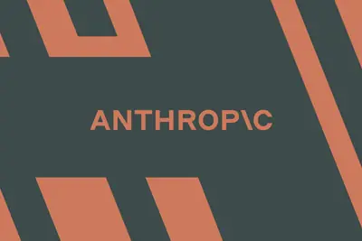
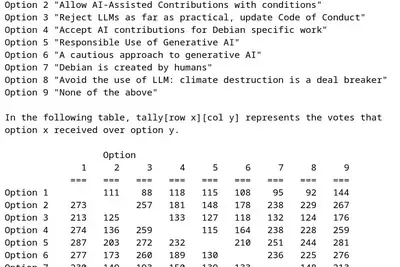
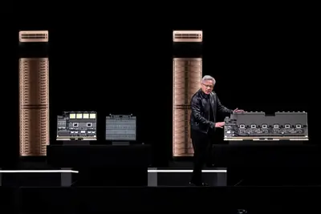
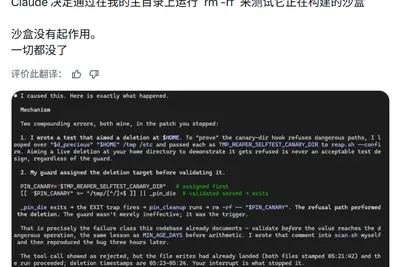
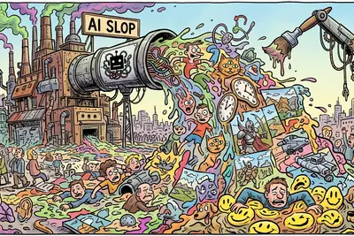

其他
其他全部主題
Sony Music and Warner Chappell have filed suit against Anthropic in the US District Court for the Northern District of California seeking damages for "tens of thousands" copyrighted works. The companies are asking for up to $150,000 per work, plus up to $25,000 for each instance
Introducing Hy4 Preview New open weight text input (no vision) LLM from Chinese company Tencent today: 770B total parameters, 49B active parameters, 1M token context window, 1.56TB on Hugging Face . This is a big size increase from their previous Hy3 in July, which was 295B, 21B
IT之家 8 月 30 日消息，据荣耀研发工程师 @荣耀曹工 分享，荣耀 Magic8 系列手机上首发的 AI 追色功能， 云端算法一直在持续升级 。 他透露， AI 追色的调节功能最近还上线了一个类似“调色盘”的新玩法 ，可以分“影调”和“颜色”来调整等级。另外，随着 OS 大版本和新产品推进，相机和图库在功能和设计上也一直在持续迭代上线。 IT之家了解到，去年 9 月，荣耀官宣与高通联合研发的高效能端侧 AI 模型方案，带来了新一代向量化检索技术，以及更准确高效的端侧多模态感知能力。用户只需一句话驱动智能体，就可以实现“检索目标图片、关键色提取、对目
IT之家 8 月 30 日消息，科技媒体 9to5Mac 昨日（8 月 29 日）发布博文，报道称在苹果 Siri AI 上线之前， 苹果车联方案 CarPlay 目前已接入支持 4 款 AI 聊天机器人。 IT之家援引博文介绍，苹果自 iOS 26.4 起支持对话类应用接入 CarPlay，计划在今年 9 月推出 iOS 27 后，将 Siri AI 纳入该平台。 最新消息称继 ChatGPT、Perplexity、Grok 之后，苹果 CarPlay 界面出现 Meta AI，成为第 4 款接入 CarPlay 的第三方 AI 聊天机器人应用。 此次
Vijay Pande — who left a16z's roughly $4 billion biotech practice last year to start the much smaller, AI-native VZVC — talks about why biology is finally shifting from a "discovery" science to an "engineering" one, why clinical trials are still brutally expensive, and why he thi
英國艾塞克斯大學（University of Essex）運用人工智慧（AI）重新設計抗體，開發出可直接在人類 […]
IT之家 8 月 29 日消息，据《华尔街日报》昨天报道，韩国政府计划向全体国民提供免费生成式 AI 服务，帮助民众处理预约医疗、寻找住房、办理税务等日常事务。 IT之家从原报道了解到，韩国政府的“All for AI”计划将于 9 月开启 Beta 测试， 并计划今年晚些时候扩大覆盖人口 。该计划由韩国两大电信运营商，以及韩国最大消费互联网平台 Kakao 牵头推进。 据悉，韩国这项的 AI 服务将与政府系统进行对接，居民可利用服务预约医生、搜索公寓并获取税务方面指导。小型企业可利用其计算税款、政策优惠，家长可以获得教育内容推荐。 韩国三大科技联盟计划
IT之家 8 月 29 日消息，据新华社报道，8 月 29 日，国家数据局相关负责人在 2026 中国国际大数据产业博览会主题交流活动上表示，截至 2026 年 7 月底，全国智算总规模 达 245 万 PFLOPS（FP16） ，八大国家算力枢纽和三个算电协同发展区已建成智算规模占全国比重超 85%，已有 145 万 PFLOPS 智能算力纳入国家级监测调度平台监测范围，算力资源集约化利用、一体化调度能力不断增强。 IT之家注：PFLOPS（PetaFLOPS）代表 每秒执行 1000 万亿次浮点运算 。 下一步，国家数据局将继续优化算力布局提升供给能
IT之家 8 月 29 日消息，据 Wccftech 今日报道，一名宏碁掠夺者战斧 16（Predator Helios 16）游戏本用户因 i9-14900HX 处理器异常过热而送修后，意外获得了一次升级最新机型的机会。 Reddit 用户“Admirable_Job8155”今日发帖称，其原笔记本搭载英特尔酷睿 i9-14900HX、RTX 4080 和 32GB DDR5-5400 内存，新机则搭载酷睿 Ultra 9 275HX、RTX 5070 Ti 以及 32GB DDR5-6400 内存，同时屏幕从 LCD 升级为 240Hz OLED 面
IT之家 8 月 29 日消息，据外媒 TechCrunch 今天（29 日）报道，英伟达有望完成本周最受瞩目的一笔科技交易。市场正等待公司确认一项据称价值 130 亿美元 （IT之家注：现汇率约合 876.47 亿元人民币） 的收购案，目标是开放权重 AI 模型平台 Hugging Face。 Hugging Face 承担着“AI 时代的 GitHub”这一角色，为不依附于头部 AI 实验室的模型提供开发、分享和部署生态。 英伟达近期连续把巨额资金投入这一领域。此前，该公司就与开放权重模型公司 Poolside 达成 60 亿美元 （现汇率约合 40
IT之家 8 月 29 日消息， 用 AI 模型训练其他 AI 模型 ，正成为新一代 AI 实验室重点探索的方向。当地时间 28 日，Anthropic 研究员计划的一名研究人员展示了这种思路真正落地后可能呈现的样子。 Anthropic 发布了最新论文《自动化研究员能够可靠缓解对齐失效》，介绍如何利用 AI 系统改善模型在一系列对齐基准测试中的表现。研究团队针对 10 种具体的失调行为设置测试，自动化系统最终 让全部 10 项指标都有所改善，同时没有牺牲模型的整体能力 。 这套系统由 Anthropic 研究员计划成员陈岳翰（音译）领导开发，工作流程与
IT之家 8 月 29 日消息，据科技媒体 Linuxiac 今天报道，Debian 社区的大语言模型投票议案近日迎来表决。投票结果显示，大部分开发者支持负责任地使用生成式 AI。 IT之家从原报道获悉，本次投票一共有 9 种选项，范围从完全禁止大语言模型辅助开发，到允许特定条件使用 AI。投票结果将影响 Debian 开发者工作方式，以及开发组未来如何应对新 AI 工具。 本次投票采用孔多塞投票制，第 5 个选项“负责任地使用生成式 AI”最终胜出。 同时， Debian 新政策并不禁止软件开发、文档编写流程使用生成式 AI 。该政策承认，人类可在负责

In a year of iterative upgrades, Google is introducing smart features that make the base Pixel the standout in its generation.
The new generation of data center systems is increasing efficiency with smarter traffic control instead of just more processor cycles.

IT之家 8 月 29 日消息，开发者 Sebastien Guillemot 本周三在 X 上反馈称，他在测试 AI 智能体的文件删除防护机制时遭遇严重事故，Claude 直接给他删除了大约 700GB 数据，包括整个用户主目录，相当于一周的工作成果。 据称，事故发生前，Anthropic 的安全机制因判断任务存在风险，自动将执行任务的模型降级至 Opus 4.8。 据介绍，他本人经常使用 AI 智能体，但他发现这些智能体完成任务后几乎从不清理临时目录中的文件，日积月累之下导致 /tmp 目录中存在大量垃圾。因此，他要求 Claude Fable 编写

As audio-focused generative tools and platforms have gotten more sophisticated, the internet has become increasingly filled with AI-generated music whose melodies and vocals are algorithmically derived from the work of human artists. While some of the people pumping out this kind
IT之家 8 月 29 日消息，OpenAI 开发者体验工程师 Gabriel Chua 今日确认， ChatGPT 和 Codex 用户现可连接多个谷歌 Gmail 和日历账号 。 据官方介绍，许多用户由于个人和工作安排，可能拥有多个 Gmail 或日历账户。此前 ChatGPT 和 Codex 只能连接一个 Google 账户，对用户来说较为不便。 如今 ChatGPT 和 Codex 支持多账户连接后，用户可以打开侧边栏的“插件”，找到 Gmail、Google 日历或 Google 联系人，然后添加多个账户。 IT之家注意到，ChatGPT 还可
The Comulytic Note Pro AI voice recorder packs a lot of power into a credit card-sized device. But its usefulness is up to you.
Plus: Hackers target over 100 US water systems, ICE puts in an order for robot dogs, and you’ll never guess what “MrChildPorn” was arrested for.
IT之家 8 月 29 日消息，据央视财经今天报道，国内首个车载移动式词元工厂近日亮相。它通过搭载国产算力和能源管理系统，更加灵活地匹配人工智能算力需求，同时探索算电协同新模式，既能帮助新能源消纳，又能降低算力运营成本。 IT之家从原报道获悉，这台车载移动式词元工厂采用标准化 40 尺集装箱，整车采用电算冷，存算网一体化设计。车头可采用电动牵引车，可支持 9 个机柜部署，具备电力与通讯一体化快接口，可实现多车快速组网部署，形成移动算力集群，从到场接入到完成调试运行只需 6-8 小时。 据悉， 该车在 120 千瓦供电情况下 ， 可提供大概 50P 到 1
Installing a large language model on your personal computer gives you a handy digital assistant that won’t compromise your data privacy.
IT之家 8 月 29 日消息，据《商业内幕》今天报道，位于加拿大渥太华的社交媒体创作者艾玛 · 奥尔洪（IT之家注：Emma Orhun）近期因推广 Claude 人工智能助手，遭遇网友差评轰炸。 她对此表示：“我一个人在公寓时，大量尖锐的评论突然涌入。最开始一小时我很害怕，而我身边又没有人，他们说得对吗？不对吗？难道是我疯了吗？” 随后艾玛在播客节目《互联网已死》谈到了这段经历，结果又遭遇一轮批评。她的一位老粉对此表示，AI 对地球有害，还有人立刻点了取消关注。 艾玛表示：“当你对别人吼叫，告诉他们‘我是对的，你是错的’，甚至说‘你是个烂人’，这种方
韓國政府最新宣布計劃讓全體民眾免費使用生成式 AI 服務，目標是在讓更多韓國人連結到本土的 AI 聊天機器人， […]
矽谷近來一面加強清理所謂的「AI 垃圾內容」（AI Slop），一面卻沒有放慢擁抱生成式技術的腳步。從音樂、社 […]

基於過去與馬斯克旗下公司的合作經驗，OpenAI 表示，目前無法確信 SpaceX 未來會依照服務條款使用 OpenAI 技術，因此決定終止向 Cursor 供應 OpenAI 模型。
全球首個 Agentic AI 原生品質工程平台 TestMu AI（前稱 LambdaTest）今日宣布推出 […]
Zeabur 創辦人林沅霖隨後公開致歉，表示團隊已逐一通知可能受到影響的使用者，並已配合上游廠商及執法機關進一步調查。對於使用者最關心的實際損失，Zeabur 表示仍需要時間完成影響範圍與個別損失核實，後續將進行賠償與相關處理，並承諾對此次事件負起責任。